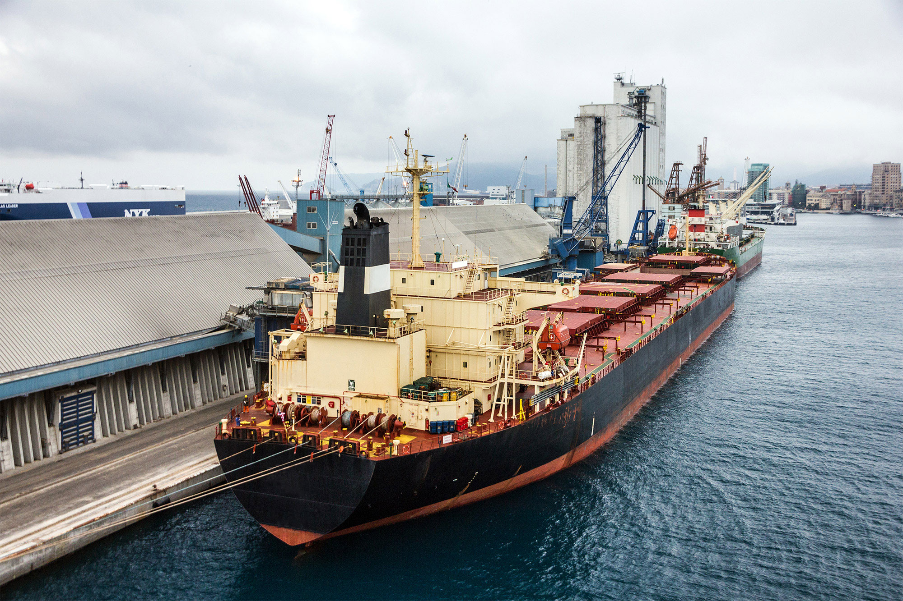
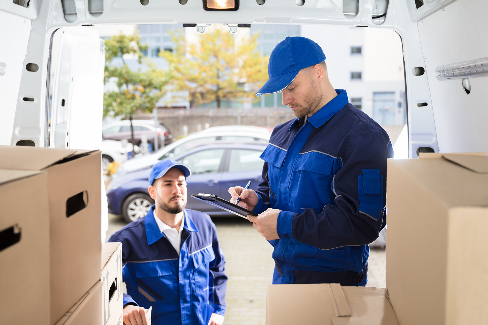

TRANSPORTES & LOGÍSTICA
O seu envio.
O próximo destino.
Soluções de transporte marítimo, aéreo e terrestre. De Portugal para o mundo, com um ponto de contacto para o seu pedido.
V.S. Trans
Cada carga
tem um percurso.
A V.S. Trans é uma empresa transitária sediada em Perafita. Organiza soluções de transporte nacional e internacional, com terminais nas áreas do Porto e de Lisboa.
Explorar os serviçosMarítimoAéreoTerrestre
Por onde começar
Três modalidades.
O mesmo contacto.
Escolha a área que procura e veja o que partilhar para iniciar a conversa.

O seu envio
Comece pelos dados
do seu envio.
A origem, o destino e as características da carga ajudam a preparar a conversa. A modalidade e as condições são confirmadas diretamente com a equipa.
Explorar